Trama
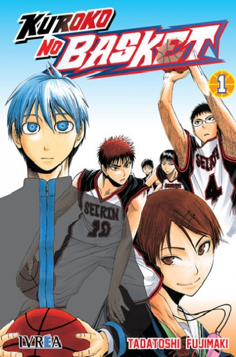
El Manga de esta serie tiene escritos e ilustraciones de Tadatoshi Fujimaki. Kuroko no Basquet, fue llevado al público por la revista especialista en manga Weekly Shonen Jump y estuvo siendo publicada en la misma desde diciembre de 2008 hasta el 1 de septiembre de 2014. Todos los capítulos después fueron reunidos y se publicaron por libros en formato de cuatro paneles (Tanbokon) a través de la revista Shueisha.
Posteriormente Tadatoshi Fujimaki realizo otra manga llamado Kuroko´s Basketball: Extra Juego, en diciembre de 2014, pero esta vez con otra revista de manga, la Jumo Next!. Otro manga que te invitamos a conocer es Angel Beast.
Manga
Anime
Personajes
Kuroko no Basuke |
|||
|---|---|---|---|
Generación de los Milagros |
|||
| 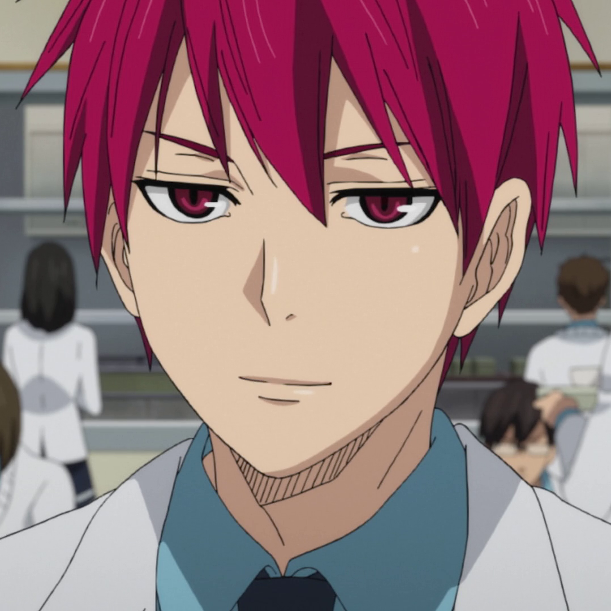 | 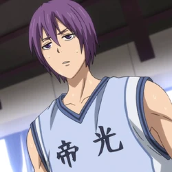 | 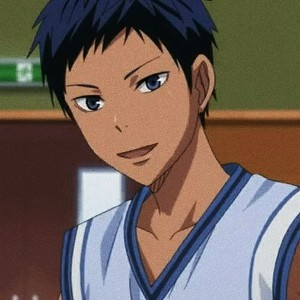 | 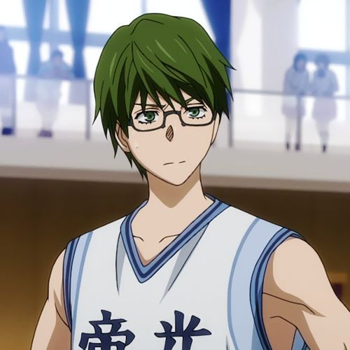 |
| Seijuro Akashi | Atsushi Murasakibara | Daiki Aomine | Shintaro Midorima |
| 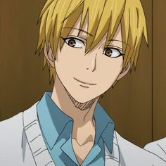 | 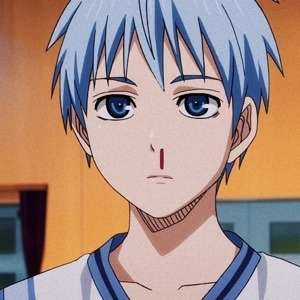 | 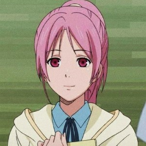 | |
| Ryota Kise | Tetsuya Kuroko | Satsuki Momoi | |
Seirin High |
|||
| 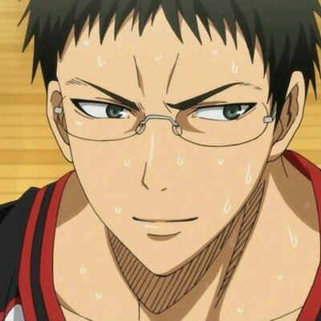 | 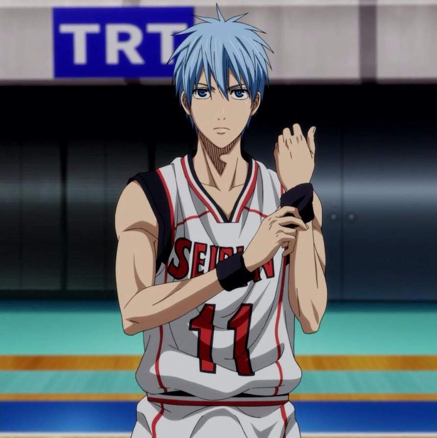 |

|
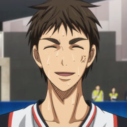 |
| Junpei Hyuga | Tetsuya Kuroko | Taiga Kagami | Teppei Kiyoshi |
| 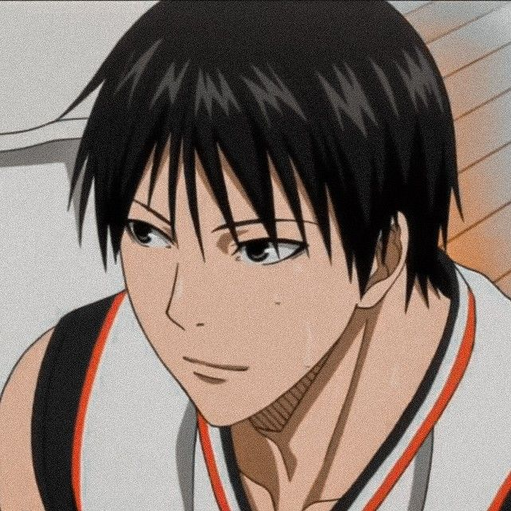 |

|
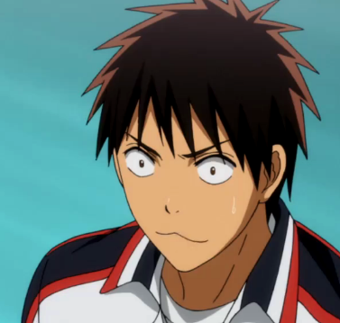 | 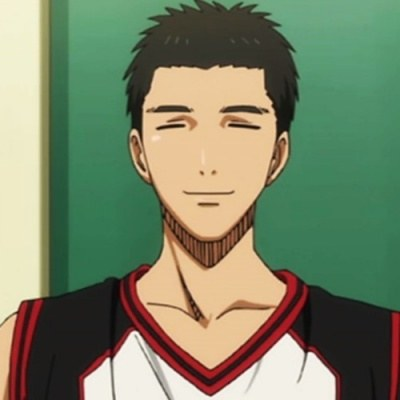 |
| Shun Izuki | Rinnosuke Mitobe | Shinji Koganei | Satoshi Tsuchida |
| 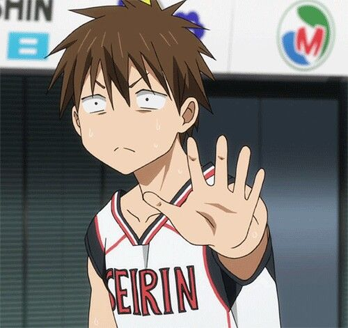 | 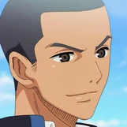 | 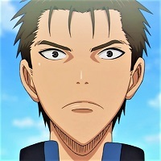 | 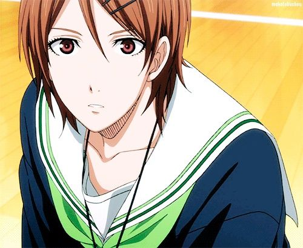 |
| Koki Furihata | Koichi Kawahara | Hiroshi Fukuda | Riko Aida |
| 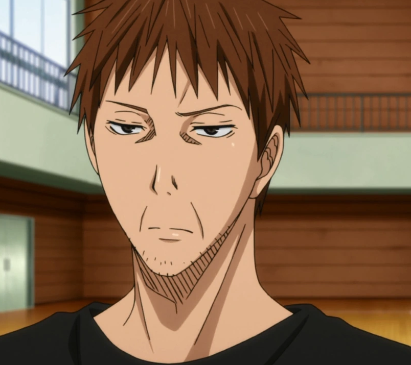 | 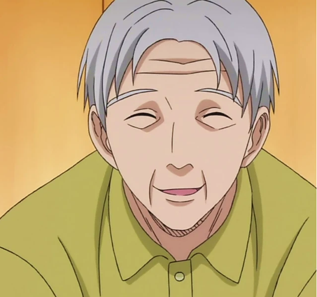 | 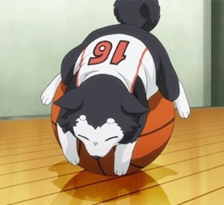 | |
| Kagetora Aida | Kenji Takeda | Tetsuya #2 | |
Kaijo High |
|||
| 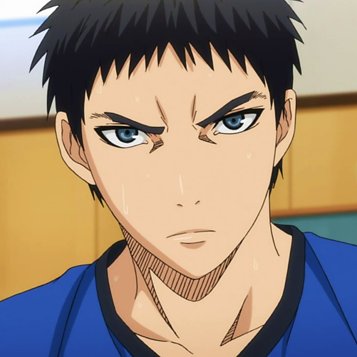 | 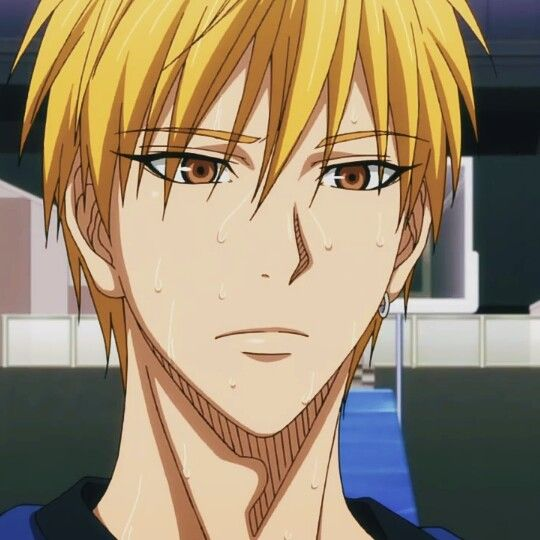 | 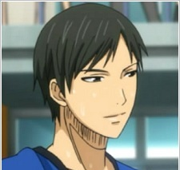 |

|
| Yukio Kasamatsu | Kise Ryota | Yoshitaka Moriyama | Mitsuhiro Hayakawa |
| 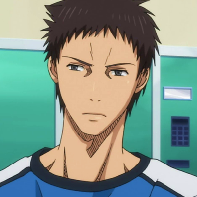 | 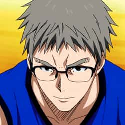 | 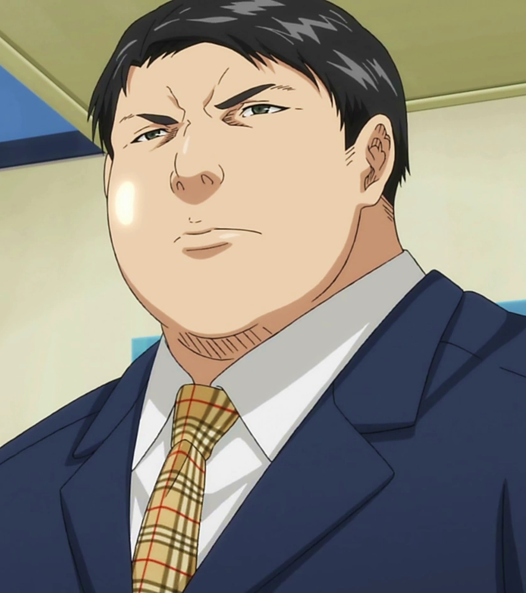 | |
| Koji Kobori | Shiya Nakamura | Genta Takeuchi | |
Shotoku High |
|||
| 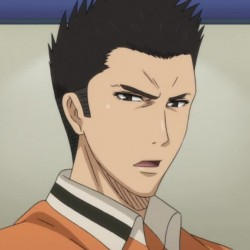 | 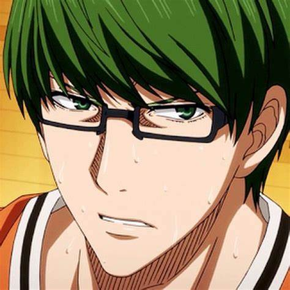 | 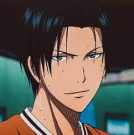 |

|
| Taisuke Otsubo | Shintaro Midorima | Kazunari Takao | Kiyoshi Miyaji |
| 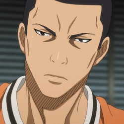 |

|

|
|
| Shinsuke Kimura | Yuya Miyaji | Masaaki Nakatani | |
Too High |
|||
| 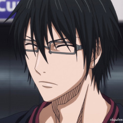 | 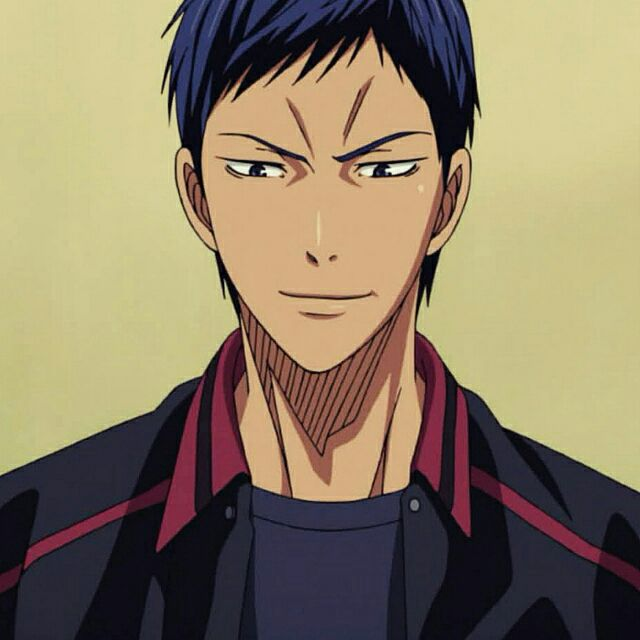 | 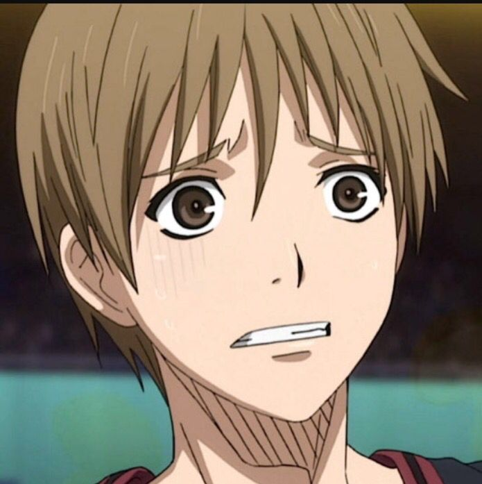 | 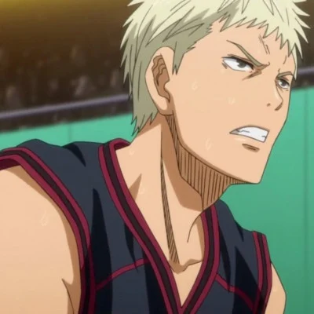 |
| Shoichi Imayoshi | Daiki Aomine | Ryo Sakurai | Kosuke Wakamatsu |
| 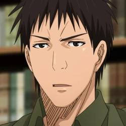 | 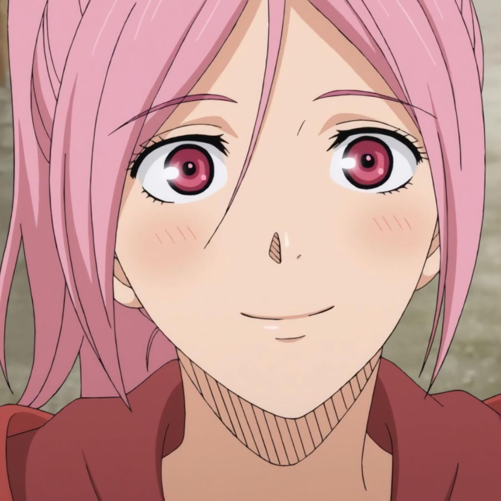 | 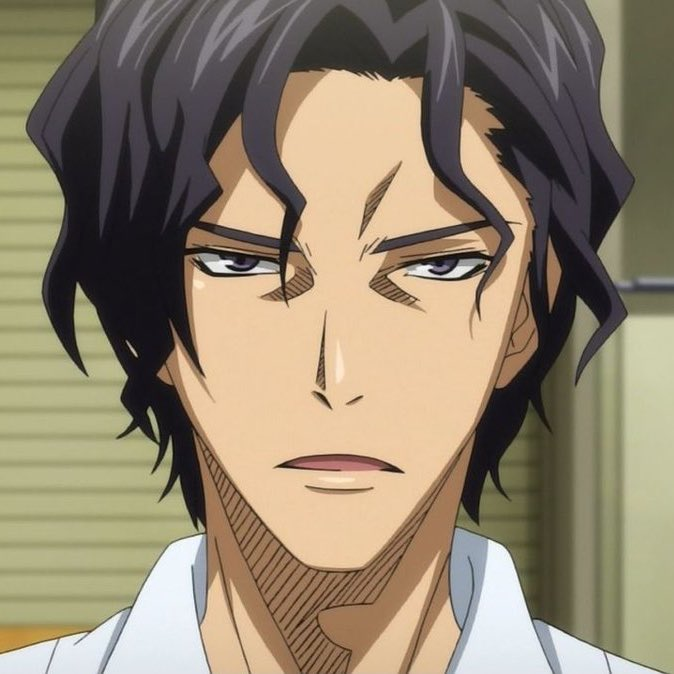 | |
| Yoshinori Susa | Satsuki Momoi | Katsunori Harasawa | |